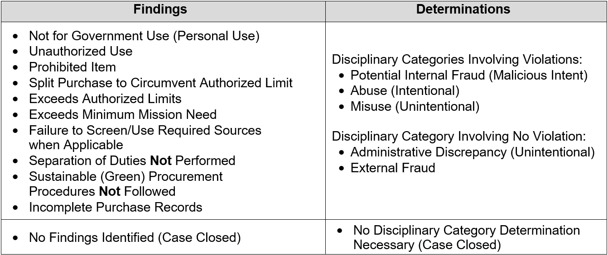

CHAPTER 11 - MANAGEMENT CONTROLS AND PROGRAM OVERSIGHT
11-1. Internal Controls
a. Effective internal controls are essential to reducing the risk inherent in the Army GPC Program and maintaining its integrity and accountability. Internal controls are necessary to ensure the achievement of organizational objectives; operational effectiveness and efficiency; reliable financial reporting; and compliance with laws, regulations, and policies. The Army has established a series of automated and manual internal controls and oversight procedures designed to identify and mitigate risk, document the effectiveness of controls, and provide data to effectively target corrective actions where and when needed.
b. A key portion of the automated oversight process, the SAHAR, provides the HCA/SCO with a high-level summary of the scope, internal control effectiveness, level of risk, and corrective actions implemented or required across the Army GPC program. One of the major strengths of these controls and procedures is the aggressive inclusion of automation applied to control points, data-mining, and reporting that enforce laws, regulation, and policy, reducing the administrative cost of effective oversight.
c. Automation is incorporated in the control/oversight/reporting process through several integrated applications sharing data throughout the entire process, from automated identity verification and supervisor approval in PIEE, to training reports from DAU to PIEE, to JAM appointments with purchase limitations communicated to the card-issuing bank for account establishment, to transaction information data-mined in IOD, and automated reporting across the entire scope of the process. This extensive automation increases the efficiency, accuracy, auditability, and reliability of the oversight process and the integrity and safety of the GPC Program.
d. GPC management officials are responsible for establishing a process of internal controls that (1) provides reasonable assurance that the GPC program is used efficiently, effectively, and legally to help manage the program and reduce violations; and (2) complies with applicable laws and regulations. Management should periodically review their GPC program’s internal controls and avail themselves of the Monthly A/OPC Review and SAHAR reports, along with any other reports, to ensure the internal controls covered in specified reports are being followed and GPC program participants are performing responsibly.
11-2. Three-Pronged Oversight Review Process
a. Surveillance and oversight of the GPC program are a shared responsibility. All stakeholders in the program, including requiring offices, RMs, logistics, contracting, and local audit and oversight organizations, are responsible for ensuring that the GPC is used in the proper manner and only authorized and necessary official purchases are made. Organizations should develop and follow a monitoring and oversight plan that establishes frequencies, methods, participation, etc.
b. Oversight is conducted to:
1) Validate and promote compliance with existing internal controls;
2) Identify, report, and resolve systemic material program weaknesses; and
3) Measure the effectiveness of internal controls.
c. To improve auditability of GPC program oversight and realize the cost and other benefits of using the commercially available SP3 technology, DoD uses the integrated three-pronged, system-enabled review cycle depicted in Figure 11-1.
Figure 11-1: Three-Pronged Oversight Review Cycle

d. The three-pronged review cycle supplements existing GPC operational transaction management and account reconciliation and review processes, including:
1) Cardholder-obtained purchasing approvals (e.g., BO pre-purchase approval, special item approval, availability of appropriate and sufficient funds);
2) Cardholder matching and approval of orders to transactions and monthly statement approval;
3) Billing official monthly certification of the managing account billing statement;
4) Resource manager funds certification;
5) A/OPC ongoing oversight and policy compliance efforts; and
6) Disbursing office funds validation and disbursement processing.
The cycle also supplements and informs both the periodic reviews of Army contracting offices (e.g., Army PMRs or DCMA-led PMRs) conducted to assess the effectiveness of the contracting function, and the GPC governance processes conducted to evaluate and improve the effectiveness of GPC internal controls.
e. Data analytics. Data analytics is the application of electronic tools (software and/or systems) for automated data sorting, filtering and mining techniques using self-learning algorithms to search GPC transaction data in order to identify patterns, trends, risks, opportunities and other information. A/OPCs should use data analytics tools to assist them in the management and oversight of their GPC program.
f. The Army uses preventive, detective, and directive controls to monitor the GPC program.
1) Preventive controls are designed to discourage errors or irregularities from occurring (e.g., processing a transaction only after it has been properly approved by the appropriate personnel).
2) Detective controls are designed to find errors or irregularities after they have occurred (e.g., IOD data mining, approving statements, and reconciling monthly invoices).
3) Directive controls are designed to encourage a desirable event (e.g., written policies and procedures to assist in compliance and the accomplishment of the goals and objectives of the GPC program).
g. The HCA/SCO and A/OPCs are responsible for adhering to the requirements specified in OMB Circular A-123, Management’s Responsibility for Internal Control. The HCA/SCO and A/OPCs are also responsible for adhering to the requirements specified in 10 USC 4754 (as modified by Public Law 112–194, Government Charge Card Abuse Prevention Act of 2012). These statutory requirements mandate the following actions (list not comprehensive):
1) Using effective systems, techniques, and technologies to prevent or identify improper purchases.
2) Invalidating GPCs from each employee who ceases to be employed by the Government or separates from Military Service.
3) Taking steps to recover the cost of any illegal, improper, or erroneous purchases made with a purchase card or convenience check made by an employee or member of the armed forces, including, as necessary, through salary offsets.
4) Taking appropriate adverse personnel actions or imposing other punishments when employees of the Army violate regulations governing the use and control of purchase cards and convenience checks or who are negligent or engage in misuse, abuse, or fraud with respect to a purchase card, including removal in appropriate cases. Violations of such regulations by a person subject to 10 USC Chapter 47, the Uniform Code of Military Justice (UCMJ), is punishable as a violation of section 892 of article 92 of the UCMJ.
5) Requiring the Army Audit Agency to conduct periodic audits or reviews of GPC programs to identify and analyze risks of illegal, improper, or erroneous purchases and payments and report the result to the Director of the OMB and Congress.
6) A/OPCs must provide monitoring, oversight, training, and administration of all BOs and CHs. Supervisors and BOs are responsible for the monitoring and oversight of BOs and CHs under their purview.
h. To minimize losses to the Army, the program must have an expectation of high integrity and ethical behavior from all participants, and sufficient staff to perform the following functions:
1) Conduct periodic risk assessments to identify fraud, waste, and abuse and establish specific controls to reasonably ensure that losses from these risks are minimized, to include data mining.
2) Conduct proper training and complete reporting and data analysis to ensure personnel have the skills and information needed to be effective in their positions.
3) Conduct detailed, effective management and oversight.
4) Implement corrective actions when cardholder management is non-compliant with Army policies and procedures.
i. DPCAP will rely on the signed Semi-Annual HA data provided by CPMs to accomplish DoD GPC reporting required by OMB. DPCAP updates visual trending of statistical and violation information to identify trends in GPC use and variances and shares this information with the Army during the GPC CPM Monthly Calls.
j. The GPC Integrated Solutions Team (IST) is DoD’s GPC governance body. IST membership consists of a GPC Governance Board composed of representatives from DPCAP, Army, Navy, Air Force, other Defense agencies, and supported by the bank team. The bank team consists of U.S. Bank (card-issuing bank), MasterCard (card association), and Oversight Systems (data mining vendor). The IST typically meets semi-annually to achieve the following:
1) Review trends and changes in the GPC industry and the DoD GPC Program.
2) Identify and approve any necessary adjustments to the bank team's electronic capabilities, DoD’s GPC enterprise tools, and/or DoD GPC policies.
3) Identify and approve changes to the DM rules and system parameter settings.
4) Bring efficiencies to the Program by adjusting the business rules/parameters based on transaction risk.
5) Review trends and changes in the GPC industry and the DoD GPC Program.
6) Identify any necessary adjustments to the bank team's electronic capabilities, DoD’s GPC enterprise tools, and/or DoD GPC policies.
7) Identify and approving changes to the Data Mining rules.
8) Review relevant data mining case information and recommendations provided by the bank team (e.g., percentage of data mining cases created for review; frequency with which each rule is triggered and associated DM case disposition, and information about the findings, determinations, and corrective actions identified) and results of the Semi-Annual HA process to inform its decision making.
11-3. Insights on Demand
a. Insights on Demand (IOD) is the SmartPay®3 data mining (DM) tool used to monitor purchasing activity and perform oversight functions. IOD provides the capabilities to identify high-risk transactions and unusual spending patterns; scan purchasing activity for misuse, fraud, waste, and abuse; and flag transactions for review. Instructions on how to navigate and perform functions in IOD are in the servicing bank’s IOD user guides and in the Defense Pricing, Contracting and Acquisition Policy - Contracting eBusiness website.
b. GPC program officials must use IOD to perform the following actions:
1) Document Daily DM Case Reviews (includes BO DM Case Questionnaires and A/OPC DM Case Questionnaires), Monthly A/OPC Reviews (includes Monthly A/OPC Check List and Monthly A/OPC Review Report) and Semi-Annual Head of Activity (HA) Reviews (includes Semi-Annual HA Review Report).
2) Review all BO completed DM case reviews, and document any finding, determination, or corrective action taken by completing the A/OPC DM Case Questionnaire. Failure to complete required reviews in a timely manner may result in account suspensions.
3) Initiate and complete reviews of cases for each finding and disciplinary category determination they independently identify (i.e., not flagged by IOD).
c. IOD Terminology. IOD provides specific terminology in its reference document, “IOD Case and Review Status Definitions and Workflow,” as well as when referring to the various levels of A/OPCs.
1) “CPM” refers to the Component Program Manager or Level 2 A/OPC.
2) “O AOPC” refers to the Oversight A/OPC or Level 3 A/OPC.
3) “AOPC” refers to the Level 4 A/OPC.
11-4. Data Mining Case Review and Closure
a. DM Case Management. Oversight Systems’ IOD DM capability evaluates each transaction against a set of tiered business rules to identify high-risk transactions. Tier 1 rules are mandatory and applicable to all DoD purchase cards. Tier 2 rules are mandatory rules that can be tailored as necessary at the local level. DM cases can be system-generated or manually generated. The system generates a DM case whenever a business rule is broken. GPC program officials are required to manually create cases for each finding and disciplinary category determination they independently identify during their reviews. Each case is adjudicated to determine if the transaction is to be classified under one of five disciplinary categories standardized in compliance with the DPCAP memo “Final Governmentwide Commercial Purchase Card Disciplinary Category Definitions Guidance,” January 27, 2020. Disputes are also categorized as determinations.
b. Tier 2 Tailoring. Tier 2 business rules are tailorable to meet the Army’s organizational needs. Tailoring must be consistent with requirements in the DoD Charge Card Guidebook. As part of the SAHAR process, HAs are required to validate that any Tier 2 Tailoring of DM business rules are implemented appropriately. For more information, refer to GPC one-pager 3OP034, “Tier 2 Tailoring in Insights on Demand (IOD)” on the DPCAP GPC website. To properly manage program risk for these potentially high-risk transactions, IOD automatically selects a random sample of 1% of these Tier 2 “auto closed” cases and assigns them for adjudication (“1% Random Reopen”). The IST reviews Tier 2 Tailoring data sets and trends and considers methodology changes based on its findings.
c. Case Assignment and Review Process.
1) IOD flags a transaction for review, generates a case, and assigns it to the primary BO.
2) The BO reviews the CH’s file documentation per section 6-2.g. The BO then locates the case in IOD and inputs requested data.
3) After the BO submits their review, IOD assigns the case to the Level 4 A/OPC. The Level 4 A/OPC reviews the CH’s file documentation, inputs comments about the purchase, identifies the applicable finding, and closes the case. The comments should provide information about the transaction and a detailed explanation of any findings. For administrative findings, the comments must state what documents or signatures were missing.
Tables 11-1 and 11-2 summarize the available options for Findings, Determinations, and Corrective Actions in IOD.
Table 11-1. GPC IOD Findings and Determinations

Table 11-2. GPC IOD Corrective Actions Taken/Planned
| Corrective Actions Taken/Planned |
|
Elevate to investigative agency Elevate through chain of command Suspend or remove employee from program Reimbursement to program Formal supervisory counseling Card suspended or canceled Refresher training Informal counseling Resolve administrative discrepancy Report as external fraud Request vendor credit/dispute the transaction |
d. Case Review Timeframe. Cases must be resolved within 30 calendar days of the billing cycle end date.
1) Billing officials must complete their review of assigned IOD cases within 15 calendar days of the billing cycle end date. A/OPCs may suspend the managing account if IOD cases are not reviewed within 15 days.
2) Level 4 A/OPCs must close cases within 30 calendar days of the billing cycle end date. Level 3 A/OPCs may notify the Level 4 A/OPC’s chain of command if cases are not closed within the required timeframe.
3) A/OPCs may add stricter controls regarding the timeline for completing IOD cases.
e. At their discretion, A/OPCs may flag additional transactions for review within IOD. Billing officials are required to review these additional cases as part of the normal case review process and timeline.
Table 11-3: Daily Data Mining Case Review Cycle
| Action | DM Case Review Cycle Milestones | Compliance Mechanism |
| IOD assigns cases daily for review | Throughout the billing cycle | Not applicable |
| Billing officials complete their review of assigned cases |
Billing officials should complete reviews throughout the billing cycle to promote timely resolution (e.g., transaction dispute, CH retraining). Billing officials must complete reviews within 15 calendar days of the billing cycle end date. Note: Any case the A/OPC refers to the BO for additional review may require action through day 30. |
A/OPCs may suspend managing accounts with open cases 15 days after billing cycle end date. |
| A/OPCs review and close assigned cases |
A/OPCs must complete reviews within 30 calendar days of the billing cycle end date. Note: Any case the OA/OPC refers to the BO for additional review may require action through day 30. |
OA/OPCs must suspend managing accounts with open cases 30 days after the billing cycle end date. |
11-5. Monthly A/OPC Reviews
A/OPCs and CPMs must complete monthly reviews within IOD to promote and measure compliance with internal controls and provide reasonable assurance of the effectiveness of these controls to mitigate program risk. A/OPCs and CPMs are required to complete monthly reviews each billing cycle. IOD automatically assigns and generates monthly reviews, which become available for completion once all transactions for that agent and billing cycle have been closed. Monthly reviews are considered complete only if 100 percent of all cases selected during the billing cycle have been closed.
a. A/OPC Monthly Review. Level 4 A/OPCs must complete this review once all BOs have completed all cases assigned to them. A/OPCs are required to initiate and conduct a Monthly A/OPC Review at the end of each billing cycle. To complete the A/OPC Monthly Review, you must generate the Monthly A/OPC Review Report to assess the key internal controls. Within 30 days of the cycle end date, A/OPCs must complete the following actions:
1) Validate all DM cases (except those in a deployed or exempt status) are closed.
2) Generate the Monthly A/OPC Review Report in IOD and assess the key internal controls included on the report. Key GPC program controls are calculated and displayed in the Monthly A/OPC Review Report generated by the DM tool. See the Monthly A/OPC Review Report Guide, which addresses data sources, calculation methodologies, and report format.
3) Perform a summary assessment that includes 100 percent of all transactions not flagged by the DM tool to (1) ensure awareness of purchasing activity within their hierarchy and (2) identify purchasing and behavior patterns not otherwise identified by the DM tool (e.g., patterns that span multiple card accounts and/or MAs) or that may otherwise require A/OPC action. Access Online Transaction Detail reports are available for performing these reviews.
4) Ensure a DM case is created for each Finding and Determination they independently identify (i.e., not flagged by the DM tool).
5) Document completion of the review by completing and certifying the A/OPC Monthly Checklist. Upload the Monthly A/OPC Review Report in the Messages tab of the A/OPC Monthly Review. If a Level 4 A/OPC has multiple agents, they can run one report for all agents and upload it to the top-listed level.
b. OA/OPC Monthly Review. Level 3 A/OPCs must complete this review once all Level 4 A/OPCs assigned to them have completed their monthly reviews. The Level 3 A/OPC reviews the internal controls summary for their program and concurs with the findings, determinations, and any corrective actions planned or taken. Level 3 A/OPCs are also required to spot-check the monthly reviews conducted by their Level 4 A/OPCs. Level 3 A/OPCs will complete monthly reviews within 10 calendar days of their Level 4 A/OPCs’ completion.
c. CPM Monthly Review. CPMs (Level 2 A/OPCs) must complete this review once all Level 3 A/OPCs assigned to them have completed their monthly reviews.
d. If the monthly review cannot be completed (i.e., is deferred) using the DM tool because the BO and/or A/OPC and their alternates are deployed or exempt and have insufficient access to the application, the OA/OPC may then mark the case “Closed – Not Reviewed” in the DM tool and approve completion of the monthly review cycle. The BO and/or A/OPC will complete the monthly review manually and then update the audit tool upon completion of the deployment.
Table 11-4: Monthly A/OPC Review Cycle Dates
| Action | Review Cycle Milestones | Compliance Mechanism |
| Level 4 A/OPC completes the A/OPC Monthly Review in IOD | Cycle End Date + 30 days | Not applicable |
| Level 3 A/OPC completes the OA/OPC Monthly Review in IOD | Cycle End Date + 40 days | OA/OPCs may suspend appropriate account(s) at 30 days if cases and Monthly Reviews are not complete. |
| CPM completes the CPM Monthly review in IOD | Cycle End Date + 55 days | CPM suspends appropriate account(s) at 55 days if cases and Monthly Reviews are not complete. |
11-6. Semi-Annual A/OPC Reviews
a. A/OPCs and CPMs must complete semi-annual reviews within IOD to ensure adherence to internal controls, facilitate senior management’s awareness of their program’s health, and promote the interdisciplinary communication necessary for successful GPC program operations. Semi-annual reviews will be performed in IOD after the end of the March and September billing cycles. They are a consolidation of the previous six monthly reviews (20 March to 19 September and 20 September to 19 March each year).
b. A/OPC Semi-Annual Review. Level 4 A/OPCs must complete this review once all six prior monthly reviews have been completed. The A/OPC reviews the internal controls summary and inputs requested data for all applicable agents.
c. OA/OPC Semi-Annual Review. Level 3 A/OPCs must complete this review once all Level 4 A/OPCs assigned to them have completed their semi-annual reviews. The Level 3 A/OPC reviews the internal controls summary for their program, concurs with the findings, determinations, and any corrective actions planned or taken, and affirms that they have briefed results to the HA.
d. CPM Semi-Annual Review. CPMs (Level 2 A/OPCs) must complete this review once all Level 3 A/OPCs assigned to them have completed their semi-annual reviews.
e. Semi-Annual Head of the Activity Briefing and Report. The SAHAR report provides HCAs and/or SCOs with a high-level GPC monitoring and oversight summary across their respective GPC program. A/OPCs at each level are required to brief their HCA and/or SCO and obtain their signature on the report, prior to submission to the ODASA(P). See Army GPC SAHAR Instructions. Additional resources are available to support the oversight process, including the SAHAR Report Field Descriptions Guide , IOD A/OPC Monthly/SAHAR Report Line Item Validation Using Access Online, and the Semi-Annual Head of Activity Review Template.
f. In the event errors are identified, A/OPCs, OA/OPCs, and CPMs should annotate corrections and explain the error(s) encountered in the Notes field of the report (or associated attachments) to help determine whether a system issue requires resolution. The Notes field will also be used to address issues and explain any exceptional circumstances (positive and negative), so they are retained and available for future reference. A/OPCs must attach an electronic copy of the signed report, including all notes and associated documentation, in the Messages tab of the Semi-Annual Checklists in IOD.
g. A/OPCs and CPMs must perform the following actions:
1) Generate the Semi-Annual HA Review Report in IOD. Include the following in the Notes section for all agents under review: summary assessment of findings and determinations, span of control, purchasing and behavior patterns not identified by IOD, appropriate attestations, and any SAHAR issues or data errors.
2) Brief semi-annual review results to their HCA/SCO and summarize program strengths and concerns. Conduct the briefing before completing the semi-annual review in IOD.
3) Certify completion by submitting the semi-annual review in IOD.
4) Obtain the HCA/SCO’s signature on the report.
5) Upload the signed report in the Messages tab of the Semi-Annual Review Checklist in IOD. Organizations with multiple levels will upload the report in the first numbered hierarchy.
Table 11-5: Timeframe for IOD Monthly and Semi-annual Reviews
| Monthly Review Completion Timeframe | |
| Role | Days after Cycle End Date |
| A/OPC (Level 4) | 30 |
| OA/OPC (Level 3) | 40 |
| CPM (Level 2) | 55 |
| Semi-annual Review Completion Timeframe | |
| Role | Completion Date |
| A/OPC (Level 4) | 15 May / 15 November |
| OA/OPC (Level 3) | 15 June / 15 December |
| CPM (Level 2) | 15 July / 15 January |
h. IOD Reports. A/OPCs can run various reports based upon their role in IOD. These reports assist the A/OPC in identifying GPC program trends, strengths, and weaknesses, and will be monitored and used in conjunction with conducting GPC annual surveillance.
11-7. Disciplinary Requirements and Categories of GPC Violations
a. The Disciplinary Category Definitions Policy has been established to foster consistency across DoD. These definitions are defined in and required by the OMB Circular A-123 to ensure accurate and complete reporting. All the disciplinary categories are reportable to DPCAP. The first four (abuse, internal fraud, misuse, and delinquency) are violations. The latter two (administrative discrepancy and external fraud), while disciplinary categories, are not violations.
b. Of the categories of defined DoD GPC violations, abuse and internal fraud are considered more serious than the other categories, as they are intentional in nature. Misuse is considered unintentional. Intent is not applicable to infrequent delinquencies, as the determination of such violations is strictly quantitative (i.e., all undisputed account balances that are unpaid for more than 61 days past the statement date). Figure 11-2 depicts the decision framework to be used when determining which violation category is applicable.
Figure 11-2. Violation Category Decision Framework
11-8. Fraud Overview
Fraud can be defined as a deception deliberately practiced with the motive of securing unfair or unlawful gain. Fraud can be an attempt to cheat the Federal Government and corrupt its CHs by using GPC accounts for transactions not part of official Government business. Fraud can come in many disguises, such as false emails, mail, or phone calls. The following are the three primary categories of fraud:
1) Non-cardholder Fraud. Examples: Lost or stolen card, account takeover, and identity theft.
2) Cardholder Fraud. Examples: Kickbacks, falsified transactions, and false statements.
3) Merchant Fraud. Examples: False transactions, intentional mischarges, bribes, and gratuities.
11-9. Non-Cardholder Fraud
a. Non-cardholder fraud involves the use of the card account or CH data by an unauthorized person. Non-cardholder fraud is investigated by special units within the servicing bank. Any information acquired relating to non-cardholder fraud should be reported. The risk of non-cardholder fraud is higher in the following situations:
1) Account/Card never received. A new or replacement card has been mailed to the CH but was not received. This may be due to a third-party interception. In this case, the account should be cancelled, and new card issued.
2) Lost or Stolen Account/Card. If the CH reports the account as lost or stolen, the account will be cancelled and new one issued. Reporting the account as lost or stolen does not relieve the Federal Government for payment for any transactions that were made by the account holder prior to losing it.
3) Altered or counterfeit cards. This occurs when third parties obtain account information and used that information to make purchases with an altered or counterfeit card. If the bank recognizes a fraudulent pattern of use at the time of authorization, the bank will validate the use of the account with the CH and/or suspend the account.
4) Account takeover/ Identity theft. In this case, the account holder’s identity has been compromised and a third party has requested a new account by providing confidential information about the account holder. Any CH who believes that he or she may have been subject to identity theft should contact the bank’s customer-service department. Once a determination is made that an account has been compromised, investigation is the responsibility of the bank. Unless a government employee is determined to be involved in the fraud, the agency generally does not participate in the investigation. The account will be closed, and a replacement account opened.
b. If Non-Cardholder Fraud Occurs. If fraud is detected on the account, the CH must immediately report the incident to the following: BO, A/OPC and servicing bank. The servicing bank will block and/or terminate the account. If necessary, the bank will then issue a new card with a new account number. Also, the bank will mail a “Statement of Fraud” letter to the cardholder, which must be completed and returned promptly. Sometimes, unauthorized transactions will appear on the billing statement, even though the account was reported lost or stolen. Cardholders should report all unauthorized transactions by calling the bank's customer service telephone number.
c. Non-Cardholder Fraud Methods. Some of the different methods of fraud include the following:
1) Counterfeit Accounts. To make fake cards, criminals use the newest technology to “skim” information contained on magnetic stripes of cards and also to pass security features (such as holograms).
2) Lost or Stolen Accounts. Physical cards are stolen from a workplace, gym or unattended vehicle.
3) Card Not Present. Internet fraud occurs whenever account information is stolen and used to make online purchases. Merchant asks for the CVC code (located on the back of the card) to help prevent this type of fraud.
4) Phishing. Phishing occurs whenever a CH receives a fake email directing him or her to enter sensitive personal information on a phony website. The false website enables the criminal to steal information from the account holder.
5) Non-Receipt. This type of fraud occurs whenever new or replacement cards are mailed and then stolen while in transit.
6) Identity Theft. A criminal applies for an account using another person’s identity and information.
d. Detecting Non-Cardholder Fraud. One of the first signs that an individual is a victim of fraud is at least one “mystery expense” showing up in the monthly statement. To help detect fraud, cardholders should review their statement by performing the following actions:
1) Look for transactions you do not recall making.
2) Check for unknown vendors.
3) Search for account withdrawals you do not remember making.
e. Avoiding Non-Cardholder Fraud. Cardholders should use the following practices to avoid fraud:
1) Secure account number and information.
2) Safeguard your personal identification number (PIN). Do not write it down; memorize it. Do not share your PIN.
3) Monitor your card during transactions. When the card is returned, check to make sure it is yours.
4) Immediately report lost or stolen accounts and/or any questionable charges.
5) Sign the back of a new card as soon as you receive it. If you do not receive a replacement card before the expiration date of the older card, contact the bank.
6) Destroy unwanted or expired cards. Shred or secure monthly statements and receipts.
7) Electronically verify charges appearing on your monthly statement.
8) Unless you initiated the purchase, never give your account information over the telephone, through the mail, or on the internet.
9) Consistently check your account for accuracy of personal and billing information. Notify the bank if your personal information and/or address needs updating.
10) Never let a telemarketer or salesperson pressure you into agreeing to a deal.
11) Be aware of common scams and contact your A/OPC and the bank for unusual situations.
12) Inform your A/OPC if you won’t be using your card for an extended time. The A/OPC will temporarily suspend the card or reduce the single purchase limit to $1.
11-10. Cardholder Fraud and Merchant Fraud
a. Cardholder Fraud, Misuse and Abuse. This type of fraud occurs when a cardholder uses their account to transact business that is not sanctioned, not authorized, not in one’s official Government capacity, not for the purpose for which the card was issued, and/or not as part of official Government business. Intentional use of a GPC account for other than official Government business constitutes abuse, and depending on the situation, may constitute fraud.
b. Consequences of Cardholder Fraud. Cardholders have a responsibility to use the account to procure supplies and services at the direction of the Army under official purchase authorization. If a CH abuses the GPC or participates in fraud, the Army may cancel the purchase account and take appropriate disciplinary action against the CH. In the case of account abuse, any participating employee may be held personally liable to the Federal Government for the amount of any unauthorized transaction. Depending on the facts involved, an employee may be subject to fine or imprisonment for action relating to purchase account abuse and fraud. There are guidelines and procedures for disciplinary action to be taken against individuals for the improper, fraudulent, or abusive use of the purchase account. Purchase account abuse/fraud may have the following potential consequences:
1) Counseling
2) Cancellation of card account
3) Notation in employee performance evaluation
4) Reprimand
5) Suspension of employment
6) Termination of employment
7) Criminal prosecution
c. If Cardholder Fraud Occurs. If an A/OPC suspects that a BO or CH has committed fraud, the A/OPC should first contact the individual’s command. The A/OPC may file a complaint with the Army Inspector General. Investigations are initiated upon receipt of a complaint or other information that gives a reasonable account of the wrongful or fraudulent act. The DoD hotline phone number is 800-424-9098 to report fraud. A/OPCs should be as specific as possible when reporting fraud. The following information should be provided:
1) Employee's full name
2) Rank or pay grade
3) Duty station
4) Specific suspected fraudulent act or wrongdoing
5) Specific dates and times
6) Specific location of where the suspected fraudulent act occurred
7) How the individual completed the alleged fraudulent act
d. Merchant Fraud. This type of fraud is committed by the merchant. Merchant fraud can occur either with or without the CH’s knowledge or consent. Rotating sources may help prevent this type of fraud. Billing errors, such as duplicate charges, are not considered merchant fraud. Examples include:
1) A vendor intentionally charges for items not delivered/services not performed.
2) A vendor offers bribes and gratuities to a government employee in exchange for gaining purchasing activity.
11-11. Reporting and Monitoring for Fraud
a. Reports for Identifying and Preventing Fraud. A/OPCs should use the following reports to identify potential card misuse and fraud and to prevent fraud from occurring:
1) Declined Transaction Authorizations Report. This report identifies cardholders who have attempted to use an account to buy an item for which they are not authorized, that exceeds their single purchase limit, that exceeds their monthly purchase limit, or from a merchant that falls under a blocked MCC.
2) Transaction Detail Report. This report identifies the date, merchant, reason code, dollar amount, and status of each dispute filed by CH. BOs and A/OPCs should track and follow up on disputes to determine their outcomes. Cardholders should attempt to resolve disputes directly with merchants prior to filing a disputes report. If a merchant is consistently appearing on the disputes report, the A/OPC should determine whether the merchant may have billing issues, quality issues, or is attempting to commit fraud by submitting false transactions.
3) Unusual Spending Activity Report. This report identifies transactions that may warrant further review.
4) Account Status Change Report. This report lists accounts with a change status of lost/stolen, closed, or reopened accounts. This status may either be an indicator that the CH needs to secure the account or that the CH is attempting to disguise misuse or fraudulent activity by denying the charges.
b. Reporting Fraud. All identified instances of suspected fraud or abuse must be reported. Various channels of reporting include the Chain of Command, the A/OPC, the command’s procurement fraud advisor (Staff/Command Judge Advocate), the servicing Criminal Investigation Division office, internal review organizations, and Inspector Generals at all levels. Notify the CH’s commander or second-line supervisor, as appropriate, and security manager when a Defense criminal investigative organization or Defense organizational element responsible for investigating potential misconduct involving the GPC initiates an investigation into allegations of charge card violations. Whenever possible, this notification should take place within 72 hours of the initiation. See DoD Charge Card Guidebook A.1.11.
11-12. Violation and Disciplinary Categories
a. Identifying the Violation. DoD’s GPC Disciplinary Category Definitions Guidance is a helpful resource when identifying the type of violation.
b. A/OPCs should be alert to the following indicators of possible fraud, waste, or abuse:
1) Repetitive buys from the same merchant
2) Lack of documentation for a purchase
3) Failure to safeguard cards and account numbers
4) CH or BO authorizing the use of their cards by others
5) Inadequate oversight by BOs and agencies
6) Payments made for items not received
7) Split purchases to avoid spending limitations
8) Lack of accounting for items requiring accountability
9) Payment delinquencies incurring interest penalties
10) Approval of a CH’s statement of account by someone other than the CH or BO
11) Unauthorized purchases
12) CHs returning merchandise for cash or store credit vs. having credits issued back to the GPC
c. Taking Corrective Action. When an A/OPC discovers a violation of GPC policies, the A/OPC must take corrective action. The course of action will vary depending on the intentionality and severity of the infraction. A/OPCs should take one or more of the following corrective actions:
1) Document the purchase violation in IOD and the purchase file.
2) Require involved parties to attend training.
3) Inform the involved parties’ supervisor or commander.
4) Suspend CH or BO account.
5) Terminate CH or BO appointment and account.
d. Continual or Severe Violations. Continual violation of GPC procedures by a CH or BO will result in termination of GPC privileges. A/OPCs will document the violation and action taken in their files for that particular CH/BO. A/OPCs will refer evidence of deliberate abuse to the CH and/or BO’s supervisor, Commander, or SCO for appropriate action in accordance with the Uniform Code of Military Justice or civilian disciplinary rules. A/OPCs will refer evidence of internal fraud or other criminal activity to the Commander or SCO.
e. Any misuse of the GPC is subject to criminal, civil, Uniform Code of Military Justice, administrative, and disciplinary actions as appropriate. See below Table 11-6 for details. The Offenses and Penalties table in AR 690-752 is intended for use as a guide for selecting an appropriate penalty for infractions committed by civilian employees as it may not effectively address all situations. This table does not substitute for independent supervisory judgment and does not dictate penalties. A supervisor may choose the severity of action ranging from no penalty, informal disciplinary actions, to the maximum penalty of removal.
Table 11-6: Offenses and Penalties Guidance
| Offense for Misuse of Government Charge Card | First Offense | Second Offense | Third Offense |
|
Misuse of Government Travel Charge Card or Purchase Charge Card (for example, use for unauthorized personal expenses, failure to pay charge card bill in a timely manner, failure to properly safeguard the card or failure to use card for required expenses arising from official travel. Use of the Travel Charge Card at establishments or for purposes that are inconsistent with the official business of DoD, the Army, or applicable regulations). |
Written reprimand to removal | 5-day suspension to removal | 10-day suspension to removal |
|
Unauthorized use, failure to appropriately control or safeguard the use of a Government Purchase Card as a card holder or approving official responsible for use or oversight of the purchase card. |
Written reprimand to removal | 14-day suspension to removal | Removal |